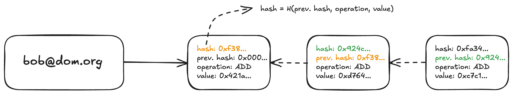
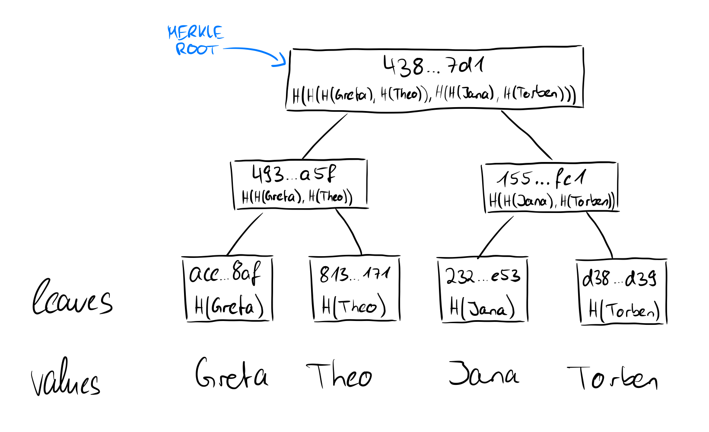
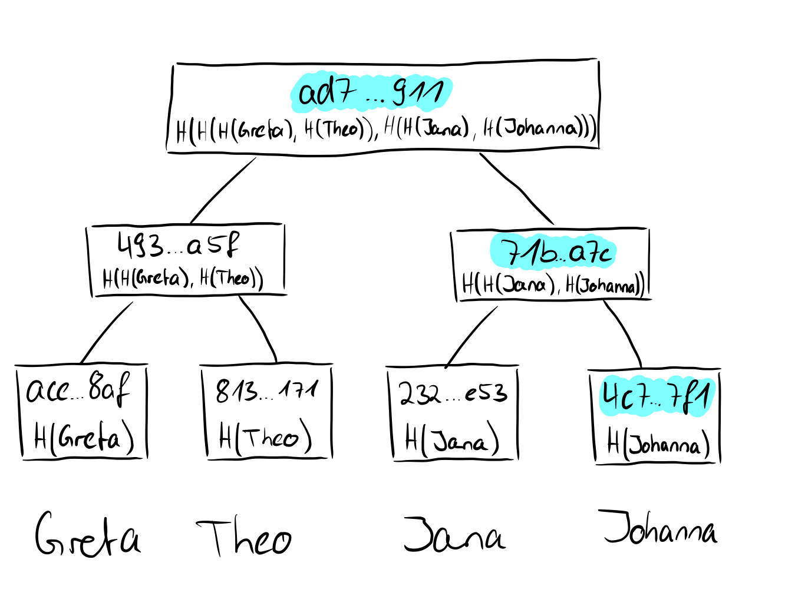
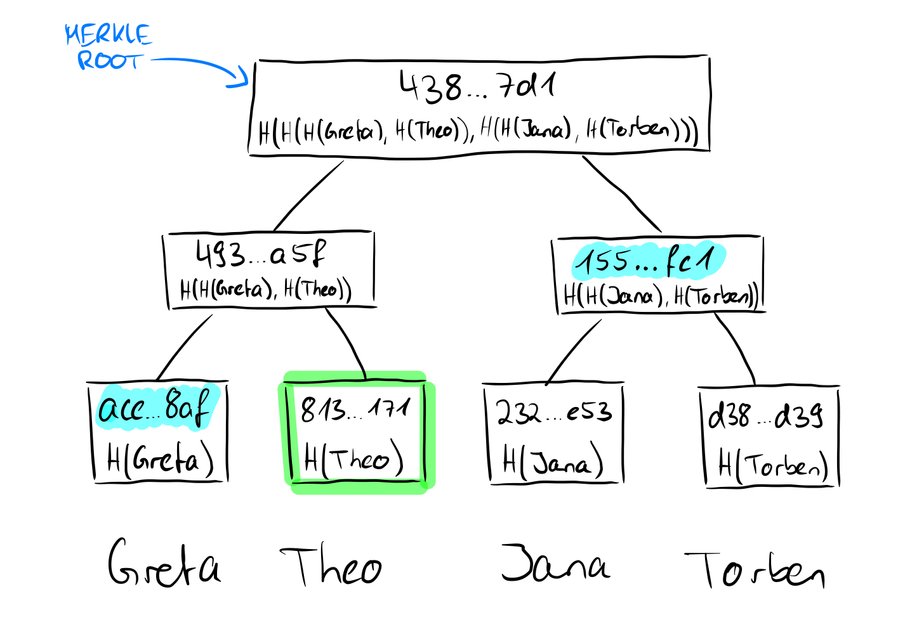
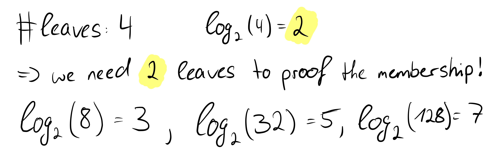
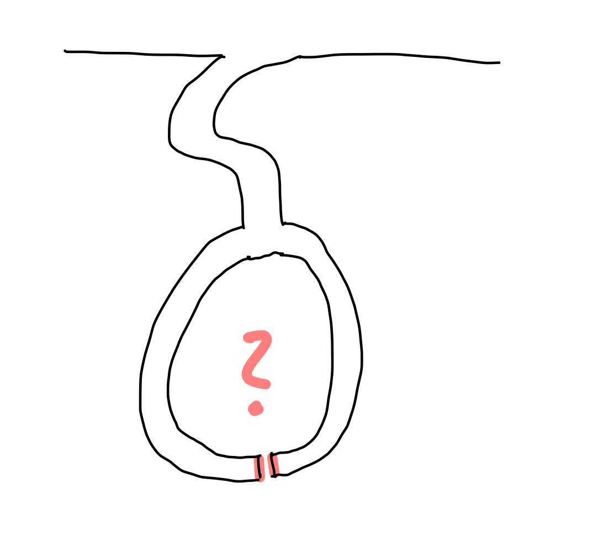

Prism is a new verifiable authentication standard for private messaging and any systems relying on PKI.
With Celestia underneath, Prism enables users to instantly and directly verify their encrypted chats and other services from any device, replacing trusted intermediaries with embedded light nodes.
Next to messaging, we envison many other use cases:
- A shared global identity layer
- Universal keystore rollups
- Decentralized password managers
- New TEE remote attestation protocols
- Advancements to CA and PKI systems
- Dark Rollups
This website serves to provide documentation for the current iteration of the protocol, context for open problems that are being discussed, and general information regarding the status of the project.
If you're interested in being a part of the project,
Quickstart
This guide will introduce you to the ideas behind Prism.
Note: If you have no or only little previous knowledge, you can get a short overview with partly simplified explanations here.
The E2EE Psyop
Despite being end-to-end encrypted (an essential security feature in every communication protocol), Signal, WhatsApp, iMessage, are not as secure as we've been led to believe.
At its core, E2EE allows gated access for the sender and receiver to read messages inside a conversation, while anyone else, including the app provider, is locked out.
But E2EE isn't perfect. It hinges on the trust assumption you're communicating with the person you think is on the other side - a foundation for backdoors and hacks.
What is a Key Directory?
A key directory serves as a repository or service that stores and distributes user's public keys. It store's public keys associated with users' identities, and allows users to fetch the public keys and corresponding merkle proofs to ensure they can securely send encrypted messages.
Although there have been instances of centralized key directories (see: MIT PGP Public Key Server, Keybase), there are no public key directories with a key transparency solution. This is what this infrastructure layer intends to provide as a rollup on top of Celestia.
The 'Trust-Assumption' Virus
Each of these apps uses its own key directory, which typically relies on a single authority to establish channels and ensure the integrity of all communications inside the protocol.
Signal, an example hailed as the gold standard of private communication, can't read users' messages due to end-to-end encryption, but lacks cryptographic guarantees and verifiability through its lack of key transparency. This tradeoff creates a potential vulnerability as the integrity of the key exchange can be compromised without users' immediate knowledge.
Specifically, it makes these systems vulnerable to a 'man-in-the-middle attack' (MITM) - in which an unverified 3rd party intercepts a conversation without either party being aware, by sending messages inside a chat and pretending to be the person on the other side. In case you wonder how close it is to reality - back in 2016, the UK government proposed GHOST, a protocol designed to integrate with popular messaging apps, designed to achieve the same goal of a MITM attack.
The achilles heel of E2EE
To escape criticism around key transparency, apps like Signal and Whatsapp have introduced their own solutions to allow users to verify their contacts by scanning a QR code or comparing numbers from their screen in person or via a phone call.
While this sounds straightforward, in reality, only 14% of users manage to navigate this on their own. Even with guidance, it takes an average of over 7 minutes to complete, with most users still not fully grasping its purpose.
What is Key Transparency?
Key transparency is a security system designed to make the distribution and management of a key directory auditable and verifiable. Signal has no key transparency solution. Other E2EE applications who do have key transparency solutions (Keybase, Whatsapp), have various strong trust assumptions that cancel out the verifiability of these systems. Furthermore, all current E2EE chat applications with key transparency solutions do not actually implement auditing or verifying from the chat client.
We provide the first key-transparency solution to enable automatic verification of the service provider. This is achieved by providing constant size succinct proofs to WASM light clients over Celestia. These WASM light clients are integrated into chat clients to have a direct connection to the DA layer without trusting an RPC.
What is Prism?
From a high level, Prism is simply a trust-minimized service that manages data - more precisely, a label-value-map - that produces evidence that it has acted correctly and honestly. Correct and honest here refer to application-specific policies by which it purports to act.
A practical application
Prism originiated as a toy implementation of a paper from Tzialla et al., from which it has significantly diverged. In this documentation, "Keypal" is described as a concrete application example, which serves as a POC of an application that could run on Prism. Prism can be thought of as a service that simply manages a two-column table. The first column stores unique identifiers, which we will simplify to just e-mail addresses in this documentation, and the corresponding column on the right stores a hashchain of values. For most Prism applications, the values stored in this hashchain are the public keys associated with the identifier.
Prism as a Sovereign Rollup on Celestia
Prism operates as a sovereign-based rollup on the Celestia blockchain. A rollup is a scaling solution for blockchain networks, particularly designed to increase transaction throughput and reduce fees while maintaining the security guarantees of the underlying Layer 1 (L1) blockchain. Unlike traditional rollups, Prism does not rely on Celestia's L1 to validate its blocks - the nodes of the rollup network are responsible for validating them, allowing Prism to take charge of its own settlement.
Block Sequencing in Prism
Prism's block sequencing and ordering are directly determined by Celestia’s validators as they produce blocks on the Celestia chain. This means that Prism transactions and state updates are included within Celestia blocks, ensuring a tight coupling with Celestia’s consensus mechanism. This offers strong security guarantees for Prism, as the state progression is backed by Celestia's validator set, enhancing security by leveraging Celestia’s data availability layer.
Prism Node Types
Prism employs three primary node types, each with distinct responsibilities:
- Sequencer/Prover: A singleton node that generates epoch proofs for operations in the previous Prism block and posts them to a proof namespace on Celestia.
- Full Nodes: These nodes run all operations posted to Prism blocks, ensuring that the Merkle root is updated according to the application-specific policies, independent of the SNARK contents.
- Light Nodes: Running on end-user devices, light nodes verify epoch proofs without downloading Prism blocks or single operations, making them efficient for minimal-resource environments.
Why Celestia?
Prism utilizes the Celestia blockchain because of its unique focus on data availability, a crucial quality for a key transparency solution like Prism. By relying on Celestia, Prism circumvents the need to pay for execution and settlement functionalities typical in monolithic blockchains, optimizing for both efficiency and cost-effectiveness.
Enhancing Security with Trust-Minimized Light Clients
Celestia’s innovations enable trust-minimized light clients that can read the blockchain without relying on RPCs. This capability allows Prism to embed WASM light clients into end-user applications, enabling direct access to the common data layer. As a result, split-view attacks on the key directory's root are prevented, while the security of the Celestia network is directly enhanced.
This integration with Celestia not only bolsters Prism's scalability and security but also establishes a robust framework for end-to-end encrypted communication systems that rely on a decentralized key directory.
Prism as a Sovereign Rollup on Celestia
Prism operates as a sovereign based rollup on the Celestia blockchain. A rollup is a scaling solution for blockchain networks, particularly designed to increase transaction throughput and reduce fees while maintaining the security guarantees of the underlying Layer 1 (L1) blockchain. Unlike traditional rollups, Prism does not rely on the Celestia L1 to validate its blocks - the nodes of the rollup network are responsible for validating them, allowing Prism to take charge of its own settlement.
Block Sequencing in Prism
Prism's block sequencing and ordering are directly determined by Celestia’s validators as they produce blocks on the Celestia chain. This means that Prism transactions and state updates are included within Celestia blocks, ensuring a tight coupling with Celestia’s consensus mechanism. This offers strong security guarantees for Prism, as the state progression is backed by Celestia's validator set, enhancing security by leveraging Celestia’s data availability layer.
Prism Node Types
Prism employs three primary node types, each with distinct responsibilities:
- Sequencer/Prover: A singleton node that generates epoch proofs for operations in the previous Prism block and posts them to a proof namespace on Celestia.
- Full Nodes: These nodes run all operations posted to Prism blocks, ensuring that the Merkle root is updated according to the application-specific policies, independent of the SNARK contents.
- Light Nodes: Running on end-user devices, light nodes verify epoch proofs without downloading Prism blocks or single operations, making them efficient for minimal-resource environments.
Why Celestia?
Prism utilizes the Celestia blockchain because of its unique focus on data availability, a crucial quality for a key transparency solution like Prism. By relying on Celestia, Prism circumvents the need to pay for execution and settlement functionalities typical in monolithic blockchains, optimizing for both efficiency and cost-effectiveness.
Enhancing Security with Trust-Minimized Light Clients
Celestia’s innovations enable trust-minimized light clients that can read the blockchain without relying on RPCs. This capability allows Prism to embed WASM light clients into end-user applications, enabling direct access to the common data layer. As a result, split-view attacks on the key directory's root are prevented, while the security of the Celestia network is directly enhanced.
This integration with Celestia not only bolsters Prism's scalability and security but also establishes a robust framework for end-to-end encrypted communication systems that rely on a decentralized key directory.
Prism Datastructures
The main data structures we introduce here are append-only hashchains and Jellyfish Merkle Trees.
Append-only hashchains
In Prism, Hashchains are the values stored in the leaves of the key directory.
Verdict provides a good introductory definition of append-only hashchains:
In Verdict's transparency dictionary, the value associated with a label is an append-only hashchain of operations, where nodes store raw operations requested on the label, as well as the cryptographic hash of the previous node in the chain. For example, in the context of key transparency, a hashchain records two types of operations: (1) adding a new key; and (2) revoking an existing key [...]
However, they do not provide a reference implementation. An implementation would conceivably include the following values:
- hash: the following three elements are hashed in a hash function and the value is stored in this field
- previous hash: a unique reference to the previous entry in the list, which depends on the contents of the entry as it contains the hashed values.
- operation: The executed operation, or "transaction type". For the traditional key transparency use case, these operations are
ADDandREVOKE. - value: Since we are still dealing with public keys, we need to know which keys are added or revoked in order to generate a list of valid, unrevoked keys from the operations.
Users can register a unique ID in Prism using various account sources. Any number of additional public keys can then be added, and keys that have already been added can be revoked. The prerequisite for adding new keys or revoking existing keys is that the operation has been signed with a private key associated with some unrevoked public key of that ID.
The image above shows an example of a hashchain. An identifier refers to this hashchain. The individual elements of the hashchain contain the operation performed and the value that is added or revoked with the operation. In addition, each element contains a previous hash value, which makes the data structure a chain, since each element points to its predecessor. The first element of the hashchain has 0000... as its previous hash, which is comparable to a genesis block of a blockchain. Each element of the hashchain is uniquely identifiable by a hash value. This is created by giving all other values of the element into a hash function H: H(previous Hash, operation, value) = hash
Jellyfish Merkle Trees
Prism uses Jellyfish Merkle Trees (JMT) instead of indexed Merkle trees. JMTs are a space-and-computation-efficient sparse Merkle tree optimized for Log-Structured Merge-tree (LSM-tree) based key-value storage.
Key features of Jellyfish Merkle Trees include:
-
Version-based Node Key: JMT uses a version-based key schema, which facilitates version-based sharding, reduces compaction overhead in LSM-tree based storage engines, and results in smaller key sizes on average.
-
Simplified Structure: JMT has only two physical node types - Internal Node and Leaf Node.
-
Concise Proof Format: The number of sibling digests in a JMT proof is less on average than that of the same Addressable Radix Merkle Tree (ARMT) without optimizations, requiring less computation and space.
-
Efficient for Sparse Trees: JMT is particularly efficient for sparse trees, which is often the case in blockchain applications.
Service Registration
Prism introduces a REGISTER_SERVICE operation that allows for creating novel account sources. You can read more about it here.
Account Creation
Prism introduces a CREATE_ACCOUNT operation that allows for decentralized account creation. This operation supports various account sources, not just email addresses. The process works as follows:
- Users prove ownership of a resource (e.g., a social media account, email address) using services like TLSNotary or zkEmail.
- The proof is generated off-chain and then submitted as part of the
CREATE_ACCOUNToperation. - The Prism protocol includes validity rules for each supported external protocol's proof system.
- Full nodes verify the
CREATE_ACCOUNToperation according to the corresponding proof system's ruleset before applying the state transition in the Jellyfish Merkle Tree.
This approach allows for:
- Addition of arbitrary account sources
- Decentralized account creation without relying on a single trusted entity
- Flexibility for applications to use various types of accounts for registration
Note: The
CREATE_ACCOUNToperation enhances the security and decentralization of the account creation process in Prism. It mitigates the risks associated with centralized account creation while allowing for diverse account sources.
The combination of append-only hashchains and Jellyfish Merkle Trees, along with the decentralized account creation process, enables Prism to maintain a transparent and verifiable record of public keys associated with user IDs from various sources.
Accounts on Prism
Once a new user is added to the JMT, we know that all updates to a hashchain are valid by construction - updates must be signed by an already existing key in the hashchain. But who gets to add the first key for a user? Why should we trust that the first key added actually comes from the user?
High Level Overview
The entries in the transparency dictionary are indexed by labels. These labels are arbitrary strings, and in the majority of the documentation we simplify the type of label to an email address.
But to add a new email address/phone number for a user, the owner of that resource must be able to prove that they own it. This is done by means of a centralized service that verifies resource ownership. Once a user has verified ownership of an email address, the sequencer adds an entry to the hashchain.
We must move away from this, as it is both not scalable and not trust-minimized. We will register services such as zkEmail and TLSNotary to provide resource ownership proofs. This will allow us to move to a trust-minimized system where the user can add their own account to the state directly by posting to the DA layer.
See more in adr-002 (Account Sources) and adr-003 (Service Registration).
Account Creation and Service Registration
In the current design, account creation is managed through registered services. Here's how it works:
- Services must be registered in the system via a
RegisterServiceoperation. - Initially, service registration will be permissioned, requiring a signature from the prover/sequencer.
- Each service defines a specific challenge that must be completed to create an account. This could be either a signature check or providing a groth16 proof.
- Users create accounts by completing the service-specific challenge.
This approach allows for flexibility while maintaining control over account creation. It also paves the way for more decentralized account creation methods in the future.
Other Considerations
If all labels were stored in plaintext, services would be vulnerable to enumeration attacks. A simple protection against this is to hash identifiers, meaning users must know the ID plaintext before resolving the user's hashchain. However, this is not a strong attack prevention, as hash functions are publically known.
For this reason, we distinguish between the notion of public and private services.
- Private services would have labels run through a VRF -- completely preventing enumeration attacks, but requiring centralized (albeit publically verifiable) identity resolution.
- Public services simply hash their labels pre-insertion.
Future Developments
As the system evolves, we plan to implement the following improvements:
- Permissionless Service Registration: Once we're confident in state growth benchmarks, we may remove the signature requirement for service registration, allowing anyone to register a service.
- Resource Pricing: If state growth becomes an issue, we may introduce a credit system for account creation. Services would deposit funds (via a Celestia transaction) to obtain credits for creating accounts.
- Native Shielded Pool: While not currently implemented, there are considerations for adding operations to support a native shielded pool in the future.
Protocols
This construction allows for some interesting application-layer protocols that can be added. For example, we are adding a transaction type for registering a service. These services register with a public key or groth16 verifying key and service identifier. Then, a validity rule is added for full nodes that new entries to the JMT, if preceded by the service identifier, must be signed by the service provider's keypair or provide a valid groth16 proof for the corresponding verifying key.
Adherance to application-specific guidelines
We recall at this point that we want to prove that a specified policy has been followed, which includes, among other things, that the labels grow monotonically. Because Prism uses append-only hashchains, and all state transition circuits do not allow for label removal, the monotonic growth of the labels is ensured by the epoch proofs.
Versioning
JMT incorporates versioning, which is crucial for its operations. Each update to the tree creates a new version, allowing for efficient historical queries and updates. The version is part of the node key structure:
version || nibble path
This versioning system ensures that updates can be made efficiently without affecting previous versions of the tree.
Insertion and Updates
The insert operation comprises three steps, which we will consider individually in the following. First, again informally: what does it mean to perform an insert operation? Insert means that we add a completely new identifier - so we add a "new" email address to our dictionary. Accordingly, when we add a value to the dictionary, the structure that supports us in any reasoning changes as well, namely our Jellyfish Merkle tree that manages the derived dictionary.
Find the insertion position When traversing the tree to perform the lookup, the following two scenarios are possible:
- A leaf node with the same prefix of the nibble path but different keyhash value is found.
- An internal node is reached where the next nibble path to be visited (index n) contains an empty subtree.
Handle the current node Once we have found the location, there are two possibilities: either it is an internal node or a leaf node.
- if it is an internal node: a new leaf is created and inserted as a child node in the empty index n of the internal node
- if it is a leaf node: two different scenarios can occur at this point, either KeyHash matches the key hash at the point where the previous nibble path led, in which case it is basically an update operation. Otherwise, the KeyHash values differ and a new leaf is created. In addition, new internal nodes are created to represent the common path, as both nodes match up to a certain nibble path that is not yet sufficiently represented in the tree. This internal node takes the place of the previous leaf node and then both the new and the old node (which was previously present at the split position) are inserted in the new internal node at the respective index.
Update ancestors version The versions of all nodes that have been traversed along the way are then updated to the latest version.
Proof-of-Update
The proof that an update operation was executed correctly, i.e. a proof-of-update, means that the operation list (hashchain) for an already existing identifier has been updated by one operation correctly. For example, an already existing key could be revoked or a new public key could have been added for the respective identifier. In any case, this means that another entry has been added to the hashchain in which the operations are stored.
Note Obviously, this means that the last hash of the hashchain, which is crucial for the label-value pair in the Merkle tree, also has a new value.
The value of the leaf of the Merkle tree changes, but the index of the leaf remains the same, because it depends on the identifier (the e-mail address). We know that when the input to a hash function changes, the output also changes. Since the "value" field is part of the input of the hash of the leaf, the hash of the leaf changes accordingly. To proof the update, it is sufficient if we consider the old root (the cryptographic commitment) and perform a proof-of-membership before the value was updated, with the "old" leaf, so to say. The verification of the proof then involves performing a proof-of-membership of the leaf with the updated value and using this to calculate the new root and compare it with the current root.
In Jellyfish Merkle trees, a new version of the tree is created with each update, enabling efficient history recording while maintaining the integrity of previous states. This versioning system ensures that updates can be tracked and verified across different states of the tree and also allows reuse of unmodified parts, which helps to increase efficiency. Accordingly, when updates are made, all nodes along the updated path are given a higher version, so the verifier needs to know which version to check the update against.
Proof-of-Insert
Insertion proofs consist of the inserted key, a non-membership proof of the node in the current tree, a membership proof of the new node in the JMT, and the updated merkle root.
The non-inclusion proof has two variants for different cases:
- A leaf exists where the missing leaf should be, sharing a prefix with the key (recall that the path to the leaf is determined by the key bytes, and paths get compressed for effeciency)
- The node key leads to an empty subtree
After finding the position the new node should be inserted into, it is inserted and a membership proof is created.
Verification of update proofs is pretty self explanatory -- The non-inclusion proof is verified against the current state root, then the insertion is carried out locally to test that the membership proof leads to the same new root.
Jellyfish Merkle Proofs
Jellyfish Merkle Trees (JMT) are designed to support efficient membership and non-membership proofs, similar to Indexed Merkle Trees from Verdict. However, the proof format and verification process are optimized for better performance and smaller proof sizes.
Proof Format
JMT uses a simplified proof format that can represent both inclusion and exclusion proofs. The proof structure is as follows:
#![allow(unused)] fn main() { struct Leaf { HashValue address; HashValue value_hash; }; struct Proof { Leaf leaf; Vec<HashValue> siblings; }; }
This format allows for three types of proofs:
- Proof of Inclusion
- Proof of Exclusion (with another leaf)
- Proof of Exclusion (with an empty node)
Proof of Inclusion
A proof of inclusion in JMT is similar to traditional Merkle proofs but takes advantage of the tree's structure to reduce the proof size. When proving the existence of a node, the proof includes:
- The leaf node containing the key and value hash
- A list of sibling hashes along the path from the leaf to the root
The verification process involves:
- Verifying that the provided leaf matches the queried key
- Reconstructing the path from the leaf to the root using the provided siblings
- Comparing the calculated root hash with the known root hash
Proof of Exclusion
JMT supports two types of exclusion proofs:
-
Exclusion proof with another leaf:
- Proves that a different leaf exists with a key that shares a common prefix with the queried key
- The proof includes the existing leaf and the necessary sibling hashes
-
Exclusion proof with an empty node:
- Proves that an empty node exists on the path to where the queried key would be
- The proof includes the sibling hashes up to the empty node
The verification process for exclusion proofs involves:
- Checking if the provided leaf (if any) has a different key than the queried key
- Verifying that the common prefix length is correct
- Reconstructing the path to the root and comparing the calculated root hash with the known root hash
Efficiency Improvements
Jellyfish Merkle Trees offer several efficiency improvements over traditional Merkle trees:
- Smaller proof sizes: By collapsing consecutive levels of empty siblings, JMT proofs are more compact.
- Faster verification: The simplified proof format allows for more efficient proof verification.
- Optimized for sparse trees: JMT is particularly efficient for sparse trees, which is common in many applications.
- Optimized for LSM backed storage: features version-based key that circumvents heavy I/O brought about by the randomness of a pervading hash-based key.
Versioning
JMT incorporates versioning, which allows for efficient updates and historical queries. Each update to the tree creates a new version, and proofs can be generated for any specific version of the tree.
In summary, Jellyfish Merkle Trees provide an optimized solution for generating and verifying both membership and non-membership proofs, with improvements in proof size and verification efficiency compared to traditional and indexed Merkle trees.
Considerations for Zero-Knowledge Proofs
While JMTs offer significant advantages in terms of efficiency and proof size compared to IMTs, there are important considerations when using JMT in the context of zero-knowledge proofs:
- Variable Proof Size: JMT produces shorter proofs compared to IMT, which has a constant proof size. JMT proofs have sibling digests, compared to the constant size of for the IMT.
- Challenges with handwritten SNARKs: Implementing JMT in handwritten SNARKs can be challenging. The variable proof size of JMT requires manual handling to keep the proof size constant within the SNARK circuit, which is complex and extremely inefficient.
- Advantages of zkVMs: When using a zkVM, it becomes possible to leverage the shorter proofs of JMT more effectively. zkVMs can handle the variable-sized proofs without the need for manual size normalization.
State of Prism
This post is an overview on the current development status of Prism as of Sep 17th 2024. We will do our best to keep it routinely updated.
1. Circuits
Our current circuit implementations serve as a functional prototype, allowing us to ship an initial Proof of Concept. These circuits are missing critical components and constraints. In the repo you will find our groth16 and supernova circuits, as well as our SP1 program. We're actively enhancing this system by:
- Rewriting original groth16 circuits using bellpepper for increased flexibility in proving systems
- Finishing Supernova circuits to leverage folding schemes and move to a trusted ZK setup
- Developing additional core circuits (related to Celestia state and hashchain verification) to eliminate further trust assumptions
- Exploring zkVM solutions (e.g., Risc0, Jolt, SP1) for Celestia state awareness and harnessing JMT proof optimizations without compromise
Next steps: Complete Nova rewrite and zkVM PoC
2. Rollup Status
We've made significant progress in rollup implementation:
- Successfully implemented based sequencing with a partially unprivileged sequencer
- Enabled direct base layer update operations for users
- Developed a robust proof of concept for further refinement
Next steps: Implement full nodes and develop checkpoint SNARKs for fast sync (ADR-001)
3. API Development
We've initiated a comprehensive API redesign to better serve our diverse user base:
- Collaborating closely with application developers to ensure API alignment with integration needs
- Focusing on versatility to support various use cases, including keystore rollups, messaging, and certificate transparency
Next steps: Expand API methods based on developer feedback and use case requirements
4. State Tree Optimization
Since our last update, we have migrated fully to using a Jellyfish Merkle Tree. While functional, there are many opportunities for enhancement:
- Evaluating lower level proof verification optimizations to reduce cycle count in SP1
- Upstreaming our changes or publishing our fork as a crate if not reconcilable
- Implementing a LSM datastore, moving away from the Redis PoC
Next steps: Analyze SP1 cycles during proof verification, implement LSM-backed datastore
5. WASM Compatibility
We're making strides in WASM compatibility to ensure widespread accessibility:
- Nearing completion of WASM compatibility for light nodes
- Working towards full integration with Lumina's WASM nodes for blob submission and retrieval
Next steps: Integrate Lumina's WASM nodes and develop an SDK for seamless mobile framework integration
Architecture
We operate as a based rollup on Celestia. The SNARKs are posted to one namespace, and the operations are posted to a secondary namespace, enabling full nodes. This architecture is designed to be trust-minimized and censorship-resistant.
The sequencer is a partially unprivileged sequencer: while anybody can post update operations to the base layer, account creations must be signed by the sequencer. This is a temporary measure discussed in adr-003 (Service Registration).
Light nodes verify the state by downloading and verifying the SNARKs posted to Celestia. There is currently no P2P overlay for the Prism network.
- An epoch is defined by the valid operations posted to the namespace in the previous Celestia block.
- Services can replicate the state by running a full node, to serve their own stack and not rely on the liveness of the sequencer.
- Enables future prover decentralization (perhaps with a prover marketplace).
- Censorship resistance (updates can be posted directly to the DA layer).
graph TD
User[User] -->|interacts with| ChatApp[Chat Application]
subgraph ChatApp[Chat Application]
LuminaPrism[Lumina+Prism]
end
LuminaPrism -->|uses| ServiceAPI[Service API]
LuminaPrism -->|downloads + verifies SNARK| Celestia
subgraph ChatServiceInfra[Chat Service Infrastructure]
ChatServer[Chat Service Server]
PrismNode[Prism Full Node]
end
ServiceAPI -->|requests keys and merkle proofs| ChatServiceInfra
ServiceAPI -->|verifies merkle proofs against commitment in SNARK| ChatServiceInfra
ChatServer -->|uploads key updates| Celestia
Celestia -->|gives key updates from last celestia block| Sequencer
Sequencer[Sequencer/Prover] -->|posts snark to celestia| Celestia
Introduction to Cryptography
This section deals with basic concepts of cryptography and explains them from a high level. This has no profound explanations, but tries to provide a superficial, simplified basis to give the reader a general idea for the advanced concepts of Prism. Feel free to skip this introduction, as it covers general cryptographic basics of Prism and is intended to serve as a quick reference.
Symmetric encryption
Symmetric encryption is a method of encrypting data where the same key is used for both encryption and decryption processes. This means that both the sender and the receiver need to own / know the same secret key to securely communicate with each other.
The process works as follows:
- The sender uses the secret key to encrypt the plaintext (original message) into ciphertext (encrypted message).
- The ciphertext is then sent to the receiver over a communication channel (eventually untrusted / public).
- The receiver, who knows the same secret key, uses it to decrypt the ciphertext back into the plaintext.
Some popular symmetric encryption algorithms include Advanced Encryption Standard (AES) and Data Encryption Standard (DES). These algorithms are efficient and suitable for encrypting large amounts of data (which isn't the case for asymmetric encryption).
However, there are some drawbacks to symmetric encryption. The most significant challenge is securely distributing the secret key to all involved parties. If the secret key is intercepted by an unauthorized party, the security of the encrypted data is compromised. To overcome this issue, asymmetric encryption (public-key encryption) can be used in conjunction with symmetric encryption (which is called hybrid encryption and is used in some of our examples) to securely exchange secret keys.
Asymmetric encryption
Asymmetric encryption, also known as public-key encryption, is a method of encrypting data that uses two different keys for the encryption and decryption process. These keys are known as the public key and the private key. The public key is shared openly and can be used by anyone to encrypt data, while the private key is kept secret and is used to decrypt the data.
In a typical scenario, when someone wants to send a secure message to another person, they would use the recipient's public key to encrypt the message. Once the message is encrypted, it can only be decrypted by someone who has the corresponding private key, which should be the intended recipient.
This encryption method provides several advantages over symmetric encryption, such as enhanced security due to the separation of encryption and decryption keys, and easier key distribution since only the public key needs to be shared. However, asymmetric encryption is generally slower than symmetric encryption due to the complexity of the algorithms involved.
Hybrid encryption
Hybrid encryption attempts to balance the "weaknesses" of the individual encryption methods (symmetric and asymmetric) and benefit from both advantages.
As previously stated, there are two main advantages and disadvantages there: while symmetric encryption works faster and more efficiently, asymmetric encryption is considered more secure in certain use cases, as the key exchange between two participants of symmetric encryption can be considered problematic.
Hybrid encryption tries to benefit from the advantages of both worlds by encrypting files or secret messages symmetrically. We now encrypt the key we used to encrypt the data with the public key of the second party to whom we want to send the encrypted data. We then send both the encrypted secret message and the encrypted key to decrypt that message. Thanks to the public-key encryption, the communication partner is now able to use its private key to decrypt the symmetric key and thus efficiently decrypt the secret message. In this way, we can provide the security of asymmetric encryption and not have to worry too much about the inefficiency of the process, since no potentially large secret documents need to be encrypted, only a key of usually fixed size.
Hash functions
A hash function can be conceptualized as a black box with an input and an output. This black box transforms an input, of arbitrary length, into a fixed-size string. One of the most widely recognized hash functions is the SHA256 hash function, which maps an input to a 256-bit string output. Hash functions must satisfy certain critical requirements:
- Hash functions should be collision resistant. That is, for each input there should be a unique output. This is theoretically impossible, as there are infinitely many potential inputs and, regardless of the number of bits used in the output, it is impossible to represent an infinite number of inputs. However, it is possible to ensure that it is computationally infeasible to create collisions in practice. For instance, if we hash the strings "Andrea" and "Andreas," the resulting outputs are as follows:
Changing even one letter in the input results in an unpredictable change in the entire hash value. - Hash functions are one-way functions. That is, the calculation works in only one direction. If we want to calculate the hash of "Andrea," we can compute and obtain the result . However, we cannot perform the reverse calculation, so we cannot determine the input that resulted in the output value 253387e...ba0dc32. So its impossible to calculate: .
- Hash functions are deterministic. That is, for a given input, the same hash value is produced consistently across all calculations. Therefore, the output hash value remains constant for the same input.
Merkle Trees
Now that we know the basic ideas of various forms of encryption as well as hash functions, we have already understood the essentials of Merkle trees. Merkle trees are frequently used in modern cryptography and often form the basis of data structures used in the areas of cryptocurrencies, blockchain and key transparency.
Merkle trees take advantage of the properties of hash functions discussed above and can perform many functions in this way. There are many different variants of Merkle trees, in this case we first look at simple Merkle trees built on a binary search tree.
The leaves of the tree store data that has been hashed using a hash function. Subsequently, the resulting hash values of each of two leaf nodes are also hashed again and the resulting hash forms the parent node of these two leaf nodes. The process of producing parent nodes by taking hash values from two child nodes is performed recursively until we have only one hash value, often referred to as a Merkle root or root hash.
Since for the same input in hash functions always the same output comes out, therefore the hash value of the parent node depends directly on the hash values of the children. So, accordingly, the root depends on all the hash values in the tree and thus all the data (hashed as leaves) in the Merkle tree. Moreover, we know that in practice it should not be possible for two different inputs to produce the same output. In this way, the integrity of the data can be checked: we can thus quickly determine whether data within a tree has changed based only on the root, since we can be sure that the original root could only have come about through the input of that very data.
But why the tree? One can come up with the idea of simply putting all the data strung together into a hash function and even then the ouput would be unique to the input. The biggest advantage lies in the fact that in this way an efficient verifiability of individual contained data is made possible. No matter how many leaves there are in the tree, all that is needed to prove a single data point is the hash value of the data point itself, plus any sibling nodes on the way to the root. The depth of the tree is always logarithmic to the number of data in the binary Merkle tree, which can be considered efficient. Here is a pictorial illustration.
Cryptographic commitments
maybe for the crypto intro
We again imagine a scenario for cryptographic commtiments in which Alice and Bob interact with each other. Alice has a secret that she does not want to tell Bob. She hashes her secret and puts this secret in a safe, giving the key for the safe to Bob. This means that Alice cannot change the secret in the safe afterwards, so she is bound to it (= a cryptographic commitment scheme is binding). Bob can open the safe at a later time and see the secret, but as we have seen above, Bob cannot determine anything else from the hashed secret (= a cryptographic commitment scheme is hiding). These are the required properties of a cryptographic commitment: they should bind to a value, i.e., they should not be modifiable afterwards, and they should say nothing about the value to which one has committed.
Informally speaking, a cryptographic commitment scheme enables a sender to commit itself to a value by sending a short commitment and then later reveal the value such that the commitment scheme is binding (i.e., the sender cannot reveal a value different from what it originally committed), and hiding (i.e., a commitment does not reveal anything about the committed value).

If we now consider how the root of a Merkle tree behaves from these points of view, we take another step forward. We have seen that in the tree above the hashes of the names Greta, Theo, Jana, and Torben were stored in the leaves and then hashed together in pairs upwards until only one hash remains, which then represents the root of the Merkle tree. If we replace the value of the leaf "Torben" (SHA256 value: d38f...d39) with the value "Johnanna" (SHA256 value: 4c7...7f1), obviously not only the value of the leaf changes, but also all other values on the way from the leaf to the root and the root itself.

This means that we are bound by the root to the values of the individual leaves and if we only have the root, we have no idea which actual values or leaves are present in the Merkle tree, so they are hidden (binding and hiding). Long story short: the root of a Merkle tree is excellent for a cryptographic commitment. So now that we understand cryptographic commitments, we can look at what the proofs of membership or non-membership look like in Merkle trees.
Proof-of-Membership
We already know that the roots of the Merkle tree are in some sense a recursive computation of the hashes of the leaves. So we don't need exact knowledge about the leaves, only about their hashes. More precisely, for a membership proof (which is possible in any kind of Merkle tree, as already mentioned) we need the hashes of the sibling nodes on the way to the root.

Here we want to prove that the value "Theo" is contained in the tree. Since we know the value and we know that the hashes are created using the SHA256 hash function, we can calculate the hash value of Theo on our own. We said that we need the non-computable sibling nodes on the way to the root, and we have no way to come up with the value "Greta" because we don't know the other leave values, just the hashes. In our proof, we need to provide the hash of the value "Greta" for a proof that the root is correct. Since we now have the hash values of "Greta" and "Theo", we can calculate the parent node of the two. Uncomputable on the other hand is now again the sibling node of the parent node of "Greta" and "Theo", which we must bring again in the proof. This node is at the same time for the tree with four leaves the last necessary node to show the correctness of the root, because we can now calculate the root with the calculated parent node of "Greta" and "Theo" as well as its sibling node. What may not look very powerful in this small example is very powerful for larger trees, because mathematically speaking we only need log n nodes instead of the number of nodes (n) to prove the correctness of the root of the Merkle tree.

We see that in our example we actually need two leaves to prove the correctness of the root. Even if the number of leaves increases rapidly, with each further doubling only one more hash value is needed to prove the correctness of the root. This is an important and great property of Merkle trees and we can formally state: The time complexity of proof-of-membership in Merkle trees is O(log n).
Informal Zero-Knowledge Proofs
Superficially considered and informally speaking, a Zero-Knowledge Proof (ZKP) is a proof where a prover demonstrates the validity of a statement to another party (the verifier) without revealing any information about the statement itself. Thus, the verifier learns nothing but the fact that the statement is true. In the following, we will briefly explore the development of ZKPs and take a closer look at the concepts behind them. Many of the later elaborated concepts are well-presented in Jean-Jacques Quisquater's "How to explain Zero-Knowledge Protocols to your children", which I will summarize and expand upon below. If everything is not entirely clear at first, that is perfectly normal. As the descriptions progress, things should become clearer.
Ali Baba and the forty thieves
Quisquater bases his illustration on the adventure film "Ali Baba and the Forty Thieves". Ali Baba goes to the market every day and is robbed in some way by a thief, forty times in a row. Each time, the thieves flee to a cave, which, after its entrance, contains a hidden fork (meaning that one cannot see which path a person takes in the cave from the entrance) and one can turn either left or right.

Ali Baba follows the thieves each time but cannot see which path the respective thief takes, as he arrives at the cave a little too late. Therefore, he has to make a decision on which pursuit path to take. Since it appears that the fork leads to a dead end, he sees a 50-50 chance of catching the thief. However, he is unsuccessful every time, leading him to doubt that the thieves are so lucky as to always choose the path he coincidentally does not choose (for 40 thieves, the probability is 1 in 1 trillion (1/2^40 = 1/1,099,511,627,776), so in practical terms, it is impossible for him to always make a random mistake. There must be a secret, and the thieves prove to Ali Baba each time that he has zero knowledge of this secret.
Note This number is so close to zero that it can be considered zero in practice. This is referred to as statistical security. It is then generally referred to as having a negligible probability that an attacker can overcome a security system.
The Zero-Knowledge Proof in a new experimental setup
In the subsequent descriptions by Quisquater et al., the contemporary scientific interest in the story is outlined. They present a scenario in which a scientist, referred to as Mick Ali (a supposed descendant of Ali Baba), also knows the secret and is supposed to demonstrate it. The setup of a typical zero-knowledge proof is further emphasized: a prover (in this case, Mick Ali) wants to prove that he knows a secret, but he does not want to reveal the secret itself (more precisely, he wants to show nothing more than his knowledge of the secret). To accomplish this, a film crew records the cave, clearly demonstrating the apparent dead-end, and then films the entrance. Mick Ali subsequently enters the cave alone, while outside, a reporter flips a coin (a random event) and demands that Mick Ali, who has chosen one of the two paths, return through either the left or the right path, depending on the coin toss outcome. Depending on the side of the coin (heads means Mick should return from the right path, tails means he should return from the left path), the reporter demands Mick's return route.
This experiment is repeated 40 times and in all 40 cases Mick returns through the desired path. It could be a coincidence that Mick happened to choose the path he was supposed to return through during the first trial, fulfilling the coin-flipping reporter's request without knowing the secret. The probability of this occurring in the first trial is 1/2. The likelihood of Mick experiencing this luck in the second trial is 1/4 (1/2*1/2), and in the fortieth trial, the probability is 1/2^40, which is slightly more than 1/1 trillion, effectively zero. Mick proves that he knows the secret, as it does not matter which of the two paths he takes; he can either return through the same path or use the secret to open the door connecting the two paths and simply return through the other path.
The simulator paradigm
Following the initial discussion, the Simulator Paradigm is further elaborated. In the context of the narrative, another reporter inquires if Mick Ali would be available for additional filming with the camera crew to create a report. Mick Ali declines, stating that it is possible to reproduce the scenario without knowledge of the secret by merely editing video sequences. As a result, the subsequent reporter introduces an individual to the scene who lacks knowledge of the secret. The experimental setup remains consistent; the only difference is that the test subject can only return via the correct path if the reporter randomly selects the return path previously taken by the test subject, as the absence of secret knowledge precludes returning through the alternative path. The expected real-world outcome is described: the test subject consistently chooses the undesired path and is unable to fulfill the reporter's request. These scenes are subsequently excised from the final report, creating the illusion that the test subject possesses knowledge of the secret, as they appear to meet all the reporter's requirements.
In the realm of Zero-Knowledge Proofs, the Simulator Paradigm is a critical property frequently used for their definition. Put simply, this paradigm asserts that a proof is zero-knowledge (i.e., revealing no information about the secret) if a simulator exists that can generate indistinguishable results without possessing knowledge of the secret. Consequently, the verifier acquires no new knowledge through the proof.
Note If a simulator is able to produce a proof that is indistinguishable to the verifier from a real proof, the zero-knowledge property is considered to exist.
This concept aligns with Quisquarter's explanation, which suggests that the video sequences (i.e., Mick Ali's original video, where he is aware of the secret, and the subsequent reporter's video, where the test subject lacks knowledge of the secret and the footage is edited) can be compared in a court of law. Following this comparison, the court would be unable to ascertain which party genuinely possesses knowledge of the secret.
Summary
In "How to Explain Zero-Knowledge Protocols to Your Children," additional ideas and concepts related to the protocols and various types are outlined. For example, one notion is that the second reporter and the unknowledgeable prover (or the simulator) could agree beforehand on the path to be taken, subsequently requiring fewer sequences to be cut or, at the very least, needing to falsify the coin toss. We briefly discuss this approach because it might be an immediate consideration; however, the intriguing idea that zero-knowledge properties can be preserved even when the prover and verifier collude, as well as other ideas from the text, will be examined in greater detail later in this paper.
We will now recap the proof scenario:
A person (or an algorithm; the prover) wants to prove to another person (or another algorithm; the verifier) that they know a secret and reveal nothing more than the information that they possess this secret. There is a cave with a fork and two dead ends leading to a gate that can only be opened with a secret. The verifier stands at the entrance of the cave while the prover enters the cave and selects a path (left or right). The verifier cannot observe this decision and only enters the cave after the prover has chosen a path. The verifier then tosses a coin (a random event), and depending on the coin toss outcome, asks the prover to return via a specific path. This scenario is repeated frequently so that the probability of the prover randomly choosing the path requested by the verifier can be statistically ruled out. If the prover can always follow the requested path, it is proven that they know the secret to open the door without revealing anything further about the secret except for the prover's knowledge.
In the following sections, we will move away from the highly simplified explanations and examine other concepts in a more formal manner.
Basics of Zero-Knowledge Proofs
In the past, informal section, we tried to approach zero-knowledge proofs via a practical example and to understand a bit of the basic concepts. In the following, we will gradually become a bit more formal and specify the ideas in this way, describing possible applications and outlining how zero-knowledge proofs (or rather zkSNAKRs) are used in our application.
The first small definitions
So, as we have seen, a zero-knowledge proof is a cryptographic protocol in which a verifier (or group of verifiers) can check the correctness of an assertion without obtaining any information about the proof or the underlying secret. Before we start, we will take a closer look at the definition of Zero Knowledge Proofs, which is based on three fundamental properties: completeness, soundness, and zero knowledgeness.
Completeness: If a prover knows the secret, it can convince the verifier of it. This also means that it is always possible to prove something true.
Soundness: If a prover does not know the secret (i.e. a fraud), he cannot convince the verifier. This also means that with the Zero Knowledge protocol it is not possible to prove something false.
Zero Knowledgeness: The verifier learns nothing in the process except that the secret is true.
Types of ZKPs
Zero Knowledge protocols have been researched since the early 1980s and are currently evolving at a breathtaking rate. For example, in our detailed explanation of Ali Baba and the 40 Thieves, we saw an interactive Zero Knowledge proof, as the reporter flipped a coin several times and then repeatedly interacted with Mick Ali by requesting a specific return path. This interaction, generally speaking, was repeated until the reporter (the verifier) was convinced of the knowledge of the proof. Also, Mick Ali could not see what the result of the coin toss was, which is a somewhat "stricter" interpretation and has been shown by Babai with the so called Arthur-Merlin-Games to not be mandatory.
In addition to interactive proofs, there are also non-interactive proofs, where there is no real communication between the prover and the verifier. The prover provides all relevant information in a single exchanged message to convince the verifier of correctness (more on this later), but of course the zero-knowledge property described above is still preserved. Moreover, science now presents a great flexibility: we are able to turn interactive proofs with public coin tosses into non-interactive proofs, and as seen earlier Goldwasser and Sipser showed in 1986, based on Babai, that we can turn interactive proofs with secret coin tosses into interactive proofs with public coin tosses. Perhaps at this point I may jokingly refer to this as a possible "transitivity of zero-knowledge protocols" (which is definitely not a term in the literature, at least I have never seen this before!).
Next destination: zkSNARKs
Thus, while interactive proofs in practical applications take place between a prover and one (or perhaps a few) verifiers, it is obvious that for proofs of non-interactive Zero Knowledge Proofs (NIZK) there need not be a restriction on the number of verifiers in practice, since the proof can be verified independently of the prover. This is an interesting and also relevant for our Prism use case. We go into more detail about the Zero Knowledge Proof use of Prism in the next section, but first we look at an extension of NIZKs, so-called SNARKs or zkSNARKs.
The acronym zkSNARK stands for zero knowledge succinct non-interactive argument of knowledge. We look at the individual relevant components now more exactly, in the previous sections bases for it are put, which I will not repeat here in detail again.
Let's start with succinctness: this property of proofs literally expresses that the proof should be (very) short, shorter than than the simple delivery of the secret itself to the verifier.
We have already discussed non-interactive: there is no exchange (certainly not over several rounds) between the prover and the verifier. The prover provides everything the verifier needs for verification in a single message.
Now let's look at the last part, called the Argument of Knowledge, for which we can use our previous knowledge to get a basic understanding.
Proofs, Arguments and Witnesses
We distinguish terminologically between a Proof of Knowledge and an Argument of Knowledge. Both terms should give the verifier a certainty that soundness and completeness are valid (see above). For this purpose we have to distinguish between infinite computational power (a theoretical construct) and finite computational power (the practical, real case). A proof of knowledge is a cryptographic construct where even a (theoretical) prover with infinite computational power is not able to prove a false statement, or to falsely convince a verifier of secret knowledge without actually possessing that knowledge. This would be possible with infinite computational power in the construct of the Argument of Knowledge. If we restrict ourselves to real application cases, which are relevant for practice, no prover has infinite computational power, which is why cryptographic protocol called Argument of Knowledge provide sufficient security and guarantee the relevant properties completeness and soundness.
Now, nevertheless, we have not yet dealt with the concept of knowledge, which is obviously meant to ensure the knowledge of the prover behind the proof. The prover must be in possession of a secret knowledge (often called a "witness") and use this knowledge in the process of creating the proof to create a valid proof. In theory, we often use a so-called extractor to show that the prover knows such secret knowledge (witness). The extractor, similar to the simulator paradigm, is a purely theoretical construct that has access to the prover and its procedure. If the extractor is able to extract the secret knowledge (the witness) from the creation process of the proof, then it is proven that the prover has such secret knowledge. This sounds trivial at first, but it is an important construct to prove the security properties of zkSNARKs.
How Prism uses ZKPs
I will go into more detail about the theory behind Zero Knowledge Proofs in the elaboration over the coming months, for now let's look at what they are used for in our application.
As explained earlier, epoch-based cryptographic commitments are published (for example on a blockchain, I will explain later how we use Celestia for this), which contain the signed Merkle roots. Within an epoch, insert and update operations take place, causing the values within the Merkle tree and thus the Merkle root to constantly change. We use zkSNARKs in Prism to prove that we know a whole set of insert and update operations, in essence a whole set of combined Merkle proofs, that are responsible for the change in commitment from time to time . In mathematical terms, we could say:
Where all operations after epoch (i.e. within epoch ) are of the form . We have already seen that the application-specific policy is satisfied by valid insert and update proofs. Thus, without the SNARK, everyone would have to perform all the resulting Merkle proofs (underlying the insert and update proofs) themselves, resulting in a huge computational overhead. By using SNARKs, anyone can independently (since we are talking about non-interactive protocols) efficiently verify the proof, which is publicly provided by the service (the prover in this case) and thus convince themselves of the honest behavior of the service.
Resources
Here's a list of different resources that contain in-depth content on the relevant topics. The list is not exhaustive and is constantly updated.
Papers
- Transparency Dictionaries with Succinct Proofs of Correct Operation
- A Digital Signature Based on a Conventional Encryption Function
- Certificate Transparency
- CONIKS: Bringing Key Transparency to End Users
- Efficient Sparse Merkle Trees | Caching Strategies and Secure (Non-)Membership Proofs
- Merkle²: A Low-Latency Transparency Log System
- Transparency Logs via Append-Only Authenticated Dictionaries
- Fraud and Data Availability Proofs: Maximising Light Client Security and Scaling Blockchains with Dishonest Majorities
- Jellyfish Merkle Tree
Books
- Barak - An intensive introduction to cryptography
- Boneh, Shoup - A Graduate Course in Applied Cryptography
- Rosulek - The Joy of Cryptography
- Thaler - Proofs, Arguments and Zero-Knowledge